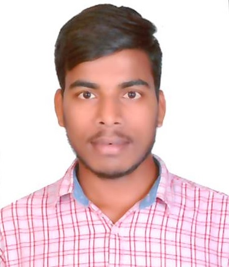

Software Developer | Embedded Systems | Android & Linux TV Applications
Versatile Software Developer with 5+ years of experience in designing, integrating, and optimizing embedded systems, specializing in Android and Linux-based smart TV applications. Passionate about solving complex technical challenges, enhancing system performance, and delivering user-centric solutions. A firm believer in continuous learning and AI-driven advancements in smart technology.
TP Vision India Pvt Ltd (Philips Audio/Video), Bengaluru
2020 – Present
Designed and implemented advanced features for TITAN OS, optimizing middleware performance and stability.
Role: Design, Coding, Code Review, Mentor
Developed and integrated several Android applications for TV platforms, focusing on features like device authentication, ACR integration, and memory optimization.
Role: Design, Coding, Code Review, Mentor
Bachelor of Technology (Electronics and Communication Engineering)
JNTUA, Anantapur | Graduated: 2018
Email: duvvurunandagopal7@gmail.com
Phone: +91 7330781451
LinkedIn: linkedin.com/in/nandagopalduvvuru
Location: Nellore, Andhra Pradesh